In the initial lectures for this course, the professor, David Malan, warns students that taking CS50 is like "drinking from the firehouse of education."
He wasn't fucking lying. I tried to keep this article as non-technical as possible, but it really wasn't that possible. My ability to put technical things into everyday terms has been tapped to the limit. So if computer code and the intricacies of it are boring to you, why are you here?? Seriously, let me know in the comments or something 😳
6 Problems, 1 Problem Set
Honestly, I'm not entirely sure, but I may or may not be cheating my way through this course as I take it a second time 🤷🏽♂️
I don't have the time to actually read the course's academic policy (sorry to the faculty 😔). I just do the obvious to keep myself honest; like NOT asking Chat Jippity to solve the problems for me.
It's never been ostensibly stated where they stand in looking at your own work if you took the course previously. And for some reason, Harvard does not give you a new Docker container on their GitHub servers if you decide to take the course again, so all my previous work is still in there… why would I, nay, how could possibly not look 😂??
It gets even worse, they usually change up Problem Sets ever so slightly each year. But most are mostly the same and some seemingly never change a single parameter. The latter was the case for the infamous mario.c, the easy version. Before we get to that, however, I had to run through the truly easy problems first. The kind that literally ask you to do something that was shown on screen during the lecture. Meant to be less of a challenge, and more of a primer for anyone who's writing code for the first time.
Since I have more than enough programming experience to be comfortable writing basic "hello, world" code, I decided to have a little fun with this introductory problem. Like, although it's strictly impossible to write a one-liner in C you can get pretty damn close if you try hard enough. This is mostly due to the preprocessor directives, and the "main" entry point to any C-program needing to be at least two lines long. Still, C's boilerplate code is sparse compared to something like Java, which means with enough effort I can achieve a beautiful abomination like this.
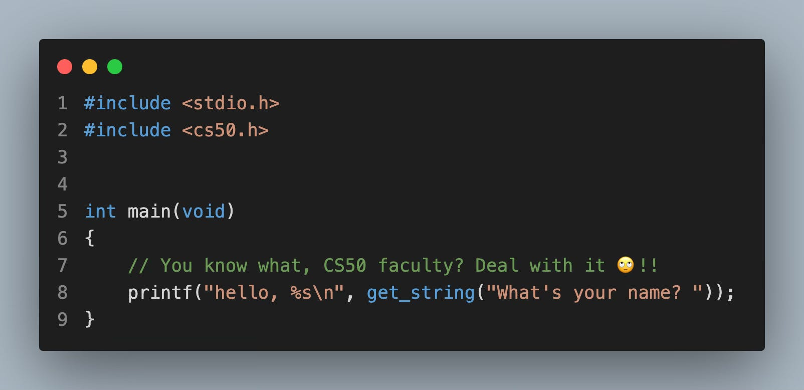Any good programmer knows code like the above should never make it into production. Imagine a 50,000-line codebase with 500 different functions being called from directly within "printf." And this is exactly why LLMs will never fully replace human programmers—because most of the code LLMs are scraping from GitHub is bullshit written by programmers like me just for shits and giggles. The code is technically correct; after all, it passed Harvard's correction-bot tests. But it is horribly designed and will become impossible to maintain if the codebase were to ever grow. Unfortunately, I don't think LLMs will ever be able to square the difference.
It's a Me, Mario, More or Less
The object of the "mario" PS in CS50 is to have students write a looping program that dynamically prints blocks from the original Nintendo game using ASCII art. Or as one Reddit user put it, brain numbing hell 😂
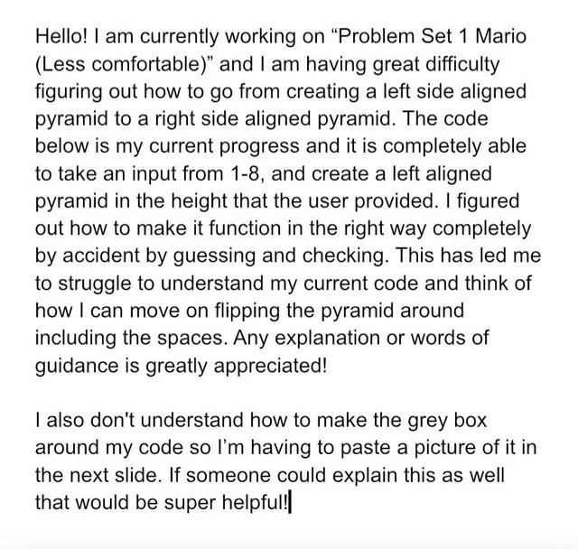It's meant to be one slanted-block (a triangle, I guess), the size (height) of which is determined by user input, is the "less comfortable" part. After that, the optional harder challenge is to programmatically create two opposing towers that are slanted on opposite ends, the size of which is also determined by user input.
Gauging my growth in thinking algorithmically and understanding the core concepts of CS was one of my biggest motivations for retaking this course; ya know, instead of taking a new-to-me CS course that my brain would've probably been more eager to engage with (new shiny things make my ADHD brain go wow).
Going back has been sooo fucking worth it!! As I scrolled through my old code, literally the very first jottings of C-code I ever wrote, I could feel my neurons getting excited from the power of spaced-repetition.
For the two years in between 2021 and 2024, I refused to write a single line of code. Now look at me, roasting my own code and deleting entire files in anger just to rewrite them properly from scratch. My programming powers and inclinations are back, I AM STILL WORTHY 😭✊🏾 !!
Now, I wish I had screenshot my previous solution to share the source code with the world. It was the most convoluted, spaghetti-coded, repetitive, function-less, pile of shit I've ever seen!! I literally could not believe I was the idiot who wrote it.
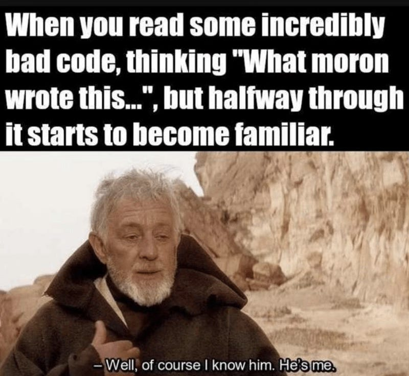I immediately recoiled in my seat and almost knocked over my coffee as soon as I opened the IDE (Integrated Development Environment). There was no chance for a screenshot because I fixed the damn thing on reflex.
The fixed code:
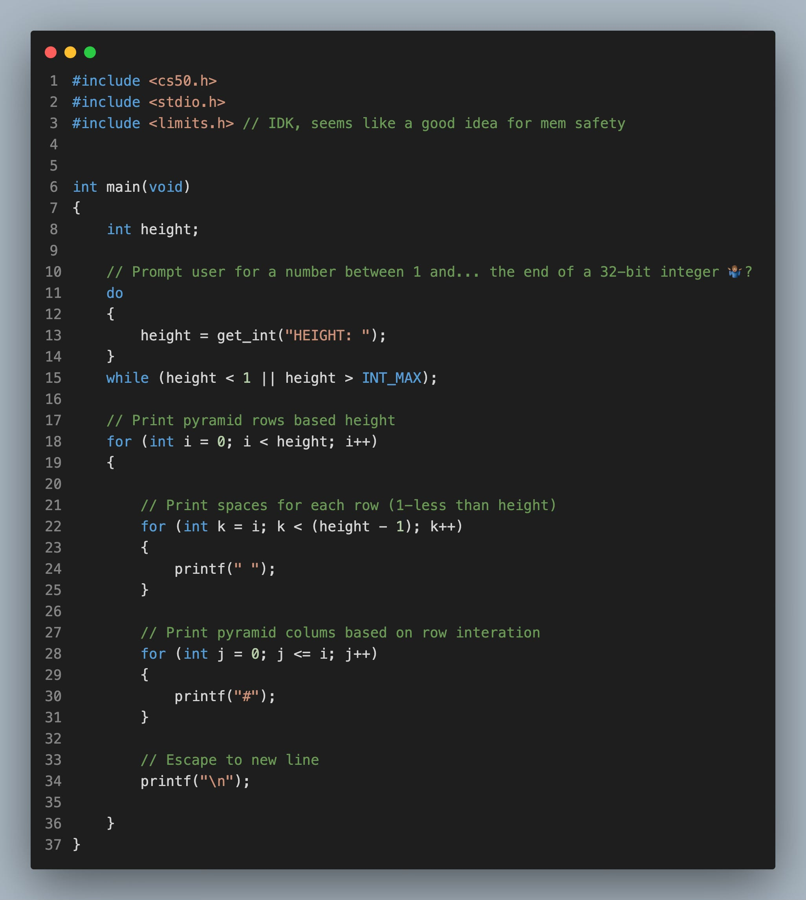Terminal output:
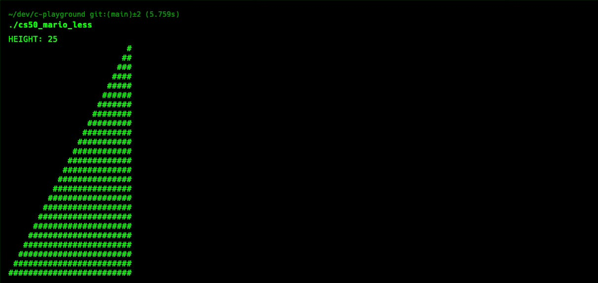It honestly felt great to see how far I'd come as a writer of computer code; hitherto, I never once looked back at my coursework since I took CS50 the first time, and that was over 4 years ago.
T'was a lovely reminder that taking a mental note of your growth is essential to us being motivated to grow some more.
Now, onto the Hard Part
As I may or may not have mentioned in my previous post. On my first go-around of this course, I completely dodged all the harder Problem Sets whenever that option was given.
It was never required to do both the hard and the easy problems, and at the time, I really just wanted to get through it. This time, I still just want to get through it fairly briskly, but I also want to do so with some style and finesse 💅🏾
The more difficult implementation of Mario in CS50, creatively called "mario-more," was the only problem in PS-1 that I actually had to ponder deeply on to solve. As I mentioned above, I'd never done the harder version to any of the PSs, so this was genuinely my first time tackling it.
To be completely honest, I'm not entirely proud of this one. I know it could be significantly better designed, but evidently, I still don't have the skills to make it so. My main issue with the way I wrote this is the lack of abstraction.
It's a main function filled with 1 do-while-loop for input validation, and 2 inner for-loops on the same execution level being controlled by one big outer for-loop that itself controls how the rows of blocks will be printed. Confusing? Exactly!!
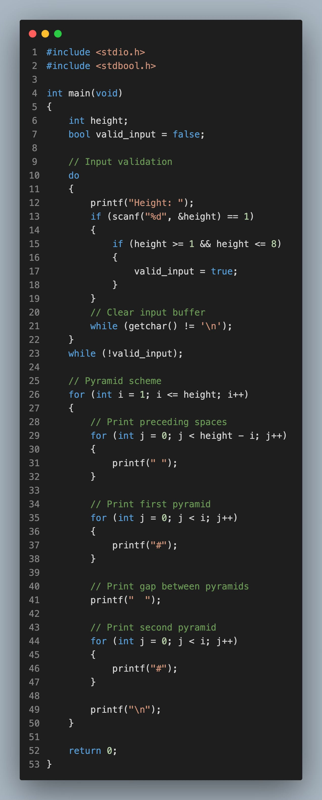I am the one who wrote this, and without the comments I placed, it'd be impossible for even me to know wtf this program does from reading the source code. That is inherently bad design. Unfortunately, creating art and making things look pretty is not an aspect of programming that I enjoy—I actually hate that part.
So although I could've spent 3-4 days pouring over every line I wrote in order to rewrite it better, I didn't. Three aptly named functions abstracting the for-loops would clearly spell out to anyone reading this code what main is meant to be doing, but I just sometimes you gotta accept "good enough" due to skill issues 😔
It's next to impossible to get excited and all into things that don't tickle my fancy. I loved writing this code, but what it does is not something that I'd ever write for myself in real life. And if a future employer ever asked me to do it, I'd tell them to please ask somebody else.
What thrills me most in terms of writing code is writing business logic, the back-end, the server-side scripts that send data to clients, tapping that binary ass—it's the very thing I got to do for the subsequent problems in this PS-1. Oh joy of joys 😭✊🏾!!
Getting Cash with a Greedy Algorithm
The latter two problems for CS50's PS-1 required students to solve money problems using two completely different algorithms. These are exactly the type of logic that gets me aroused to write in code 😜
Cash Money Rec
The former of the latter, "cash," was the easier of the two and thus the one I had done before. It's a simple implementation of a Greedy Algorithm that outputs the minimum amount of coins needed for a customer's change after a purchase.
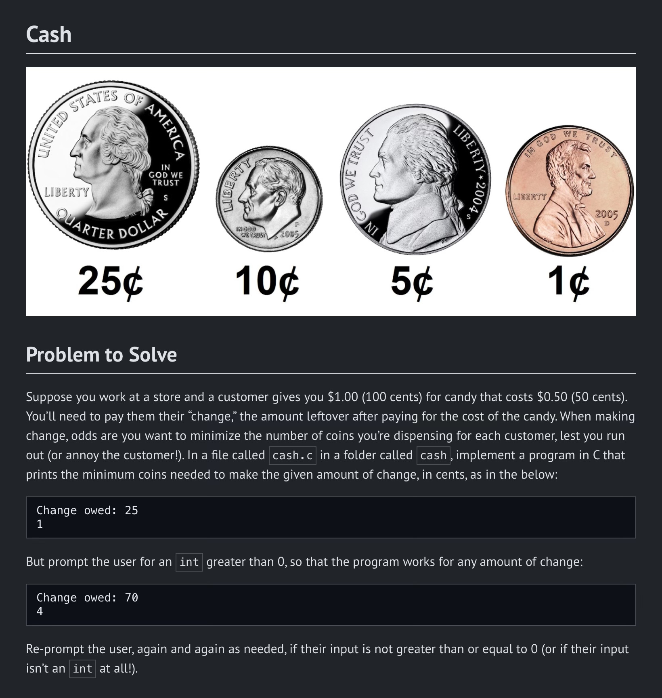Example: if you bought something for 25c but paid with a dollar, a Greedy Algo would tell the cashier to give you back exactly 3 coins, 3 quarters to make the 75c you are owed. Without it, the cashier may be tempted to give you 8 coins of change instead, 10 dimes and a dirty nickel.
I mean, I already had the solution to this one since I did it before. But, I did have quite a bit of fun refactoring my old code. And remembering how it took me a week or two to figure it out the first time. Contrasting that with the way the most optimal solution just popped into my head as soon as I read the problem; provided the confidence I needed to dive head first into the more difficult problem 😌
For Credit or Debit
Luhn's Algorithm, also commonly referred to as"mod-10" in the tech industry, is a relatively simple checksum that softly validates the legitimacy of a credit card number.
I just got to say, out of all the problems presented in this PS, I definitely had the most fun finding a solution to this one. For me, that's where most of the joy in DS&A comes from 🥹
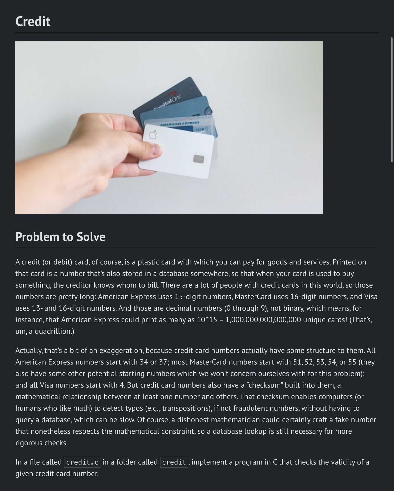Knowing there are 100 different ways to solve a problem, and my job is not only to discover and run through them. But also to ultimately pick the best one to do the job. All the different possibilities and trade-offs and pros and cons of different implementations is scintillatingly thrilling… isn't it?? I mean, I'll never understand why the kids in primary school used to call me Mandork 🙄
My Sexy Solution
Allow me to walk you through this source code, for it's the one I'm most proud of thus far 😌
As you could see, my main function is pretty damn elegant, if I do say so myself. The two function prototypes at the top—luhns_algo and card_checker—are all I need to make this baby run; just wait till you see their definitions.
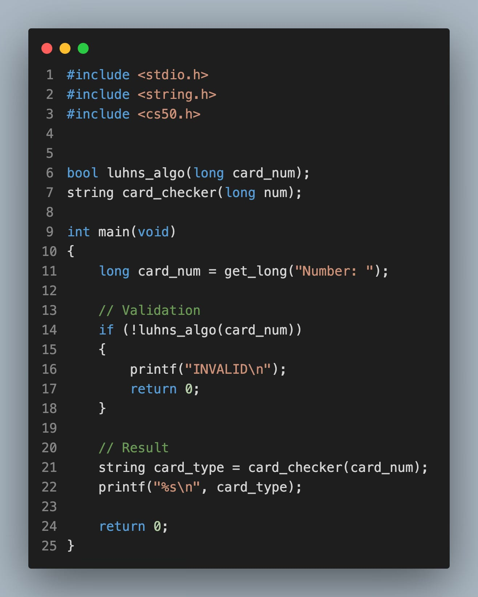In the main, I start off by getting the user input via the get_long function so courteously provided by the CS50 team. Sidetrack on that. I've always wondered if and to what extent the CS50 library for C has been used in real-life production. Like, a part of me without a doubt believes that there's a smart toaster out there running code written by "the CS50 Teaching Fellow."
The validation step is a simple conditional that checks if there's any value being returned from the luhns_algo function. If not, it's obviously invalid; stay tuned to see why!! After that, the result of the card_checker function… which, unsurprisingly, checks card numbers, is thrown into a variable called card_type. Finally, on the very next line, that variable is then thrown into printf() with a string format specifier.
Now, if any seasoned devs happen to be reading this, I want you to know it took everything in me not to throw the result of card_checker directly into printf() as the second argument. I guess it's debatable whether or not it's bad design, but seeing that kind of thing never feels clean to me. And I only ever do it for shits and giggles to attempt one-liners… which I actually do earlier in this course 😂
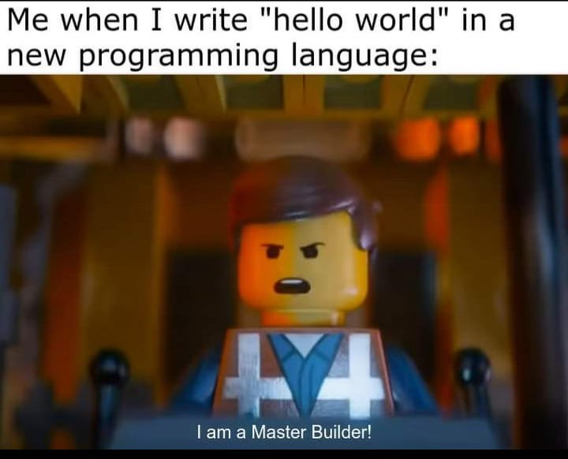Definitions of Aforementioned Functions
My implementation of Luhn's Algorithm starts off by declaring an integer variable called "sum" and setting a boolean false-flag (a switch, off by default). It also takes a long as input and returns a boolean, and I probably should have led with that, but I don't feel like restructuring this paragraph right now. Would you believe people actually tell me I'm good at writing 🤦🏾♂️
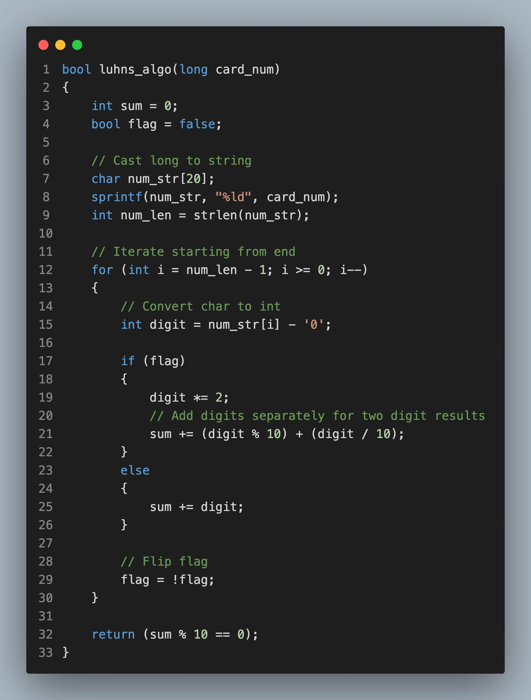Now the next little bit, although I'm very proud of it, I'm again unsure if I'm breaking CS50's academic policy. I mean, I genuinely don't think so, if only because the point of a course from Harvard is to push students beyond their limits—PLUS ULTRA!!
What I did was use an array alongside one of my favourite functions from the C standard library (stdio.h). It somehow felt dishonest to use a function that was never once brought up in the course, for a technique that was never once hinted at. But as I thought about this some more, I realised that that's exactly what the faculty at Harvard would expect. And it hit me that that's why I struggled as much as I did the first time I took this course.
It took a while for me to get comfortable exploring things I was never explicitly taught how to do as a programmer. Like I was pretty much a tutorial and dev article groupie for months after initially completing CS50 years ago. But breaking things is part of being a developer, and judging by how willing tech executives are to bring AI into their billion-dollar codebases, I'd say that occasionally fucking shit up is an encouraged part of the learning process these days 🤷🏽♂️
Wait, that was another sidetrack, wasn't it?? Got dammit, ADHD!!
Right, so the function I used was sprintf(), which has a dope-ass name and the abilities to match. It basically prints shit to a buffer instead of to the terminal like printf(). The first argument is the array being printed into, the second is the data type being printed, and the last is where that data is coming from. In this particular case, the data for the last arg is coming from the long input my mod-10 function itself. Then, the length of the newly converted string of numbers is stored in an aptly named variable.
After all the initialising and converting of parameters is done. The inverted for-loop that follows is the real crux of this Luhn's Algorithm. It's inverted in that it decrements each iteration instead of incrementing, so it starts from the back like couples who just love doing anal. The first thing it does back there is a little trick to convert each char of the string I just converted from a long into an integer. Is that stupid? Yes, but it is simultaneously brilliant, pay attention and follow along!!
The conversion is done by simply casting the char at position "i" (the current iteration of the loop) in the string to its numeric value by subtracting the ASCII value of '0'. For example, if number[i] is "5", its ASCII value is 53, and since "0" has an ASCII value of 48, we'll get the number at that position because 53 - 48 = 5. See?? Fucking brilliant 😭!!
Next up is just the false flag. Since it's set to false by default, it will always start with the second digit from the end and double its value on the next line as dictated by Luhn. Then, "sum += (digit % 10) + (digit / 10)" subsequently adds the two digits of double-digit results separately. If the product is NOT a double-digit number, its value is simply added to digit with its innocence still intact.
Once we break out of the inner loop, the outer loop runs again until the end of the string, or long, or whatever is now. Then, the false flag is flipped to be a truthy value so the loops continue to skip every other number.
Finally, after all the digits have been processed, we check to see if the sum is divisible by 10. If it is, we return true and if not we return false. And bada-boom-bada-bing, that's my interpretation of Luhn's Algorithm done and dusted 😮💨
The Card Checker
This is the function that's ultimately responsible for determining if a number matches the criteria for a Master Card, a Visa Card, or if it's an invalid credit card number. The implementation is pretty straightforward. It's not what I really had to think about since all the determinisms were clearly defined when this problem was initially introduced.
I don't even think I would've felt safe to Google this information that the course provided, or even ask AI. Because I'm guessing that 100 back-to-back searches on the specifics of credit card numbers and how to manipulate them would immediately land me on an INTERPOL watchlist that I DO NOT want to be on. So thanks for looking out, CS50, I'm Black btw 👍🏾
Right, so this function is basically a trio of conditional statements that print the type of card number being provided (AMEX or VISA or MASTER). And if it's not either of those three it's considered invalid. At least for this particular example problem… I doubt this is the code ATM machines run in real life. There ARE other credit cards that exist in the world, right 😂??
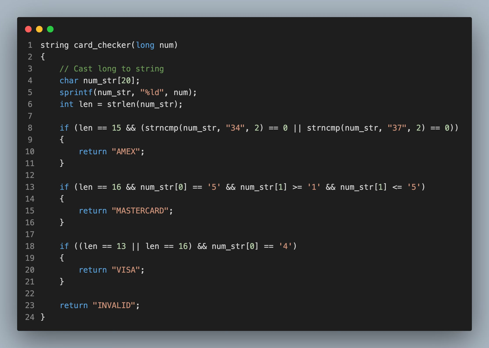Git Push Origin Main
And that's it, that's how I made CS50 Problem-set 1 my S my D 😏!!
I still may not enjoy doing stuff like "mario.c," as much as I love playing video games. I've never aspired to make my own. So I think it's alright if I'll never be able to use C to draw shadows recursively on the backs of sprites to make that appear 3D the way John Carmack did with Doom. I may never be a Carmack or a Romero, but thankfully I don't need that much skill for where I see myself as a programmer in 10 years.
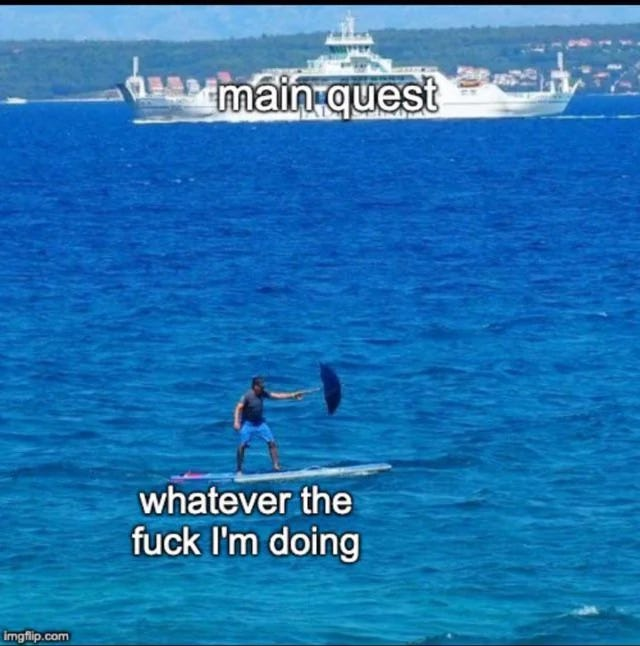Knowing exactly the type of developer you want to be is a huge benefit to knowing what to learn. That's another major mistake I made when I was first learning to code. I never really thought about or defined what aspects of software development I'd enjoy the most. And as a result, I just ended up falling into web development as a means to make money, and it burnt me tf out!!
But that's another story for another time. Live, laugh, and love until we meet again, dear reader ✌🏾